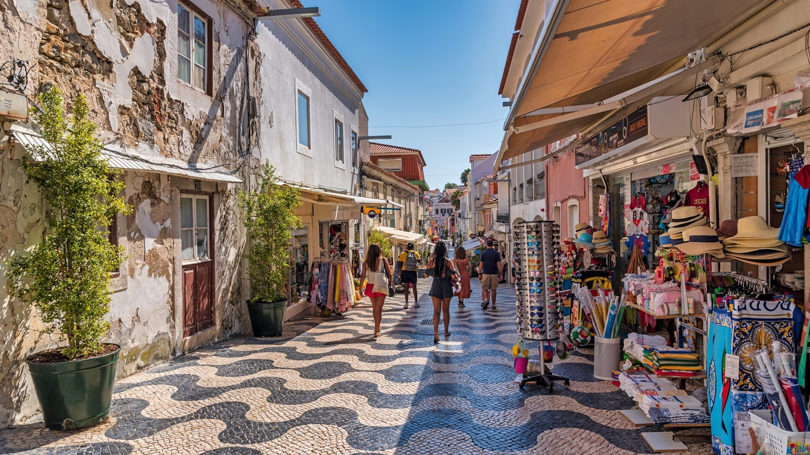
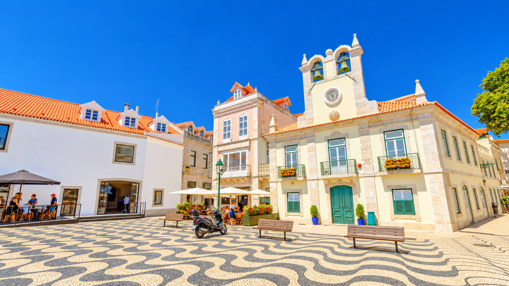
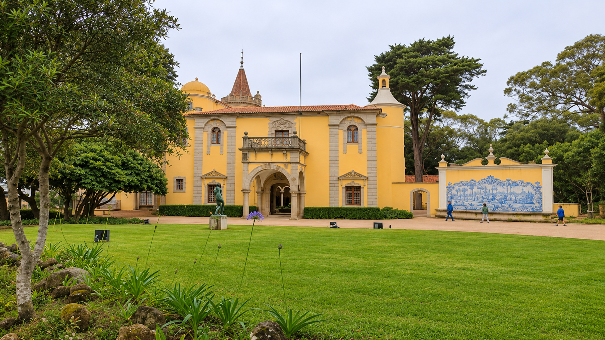
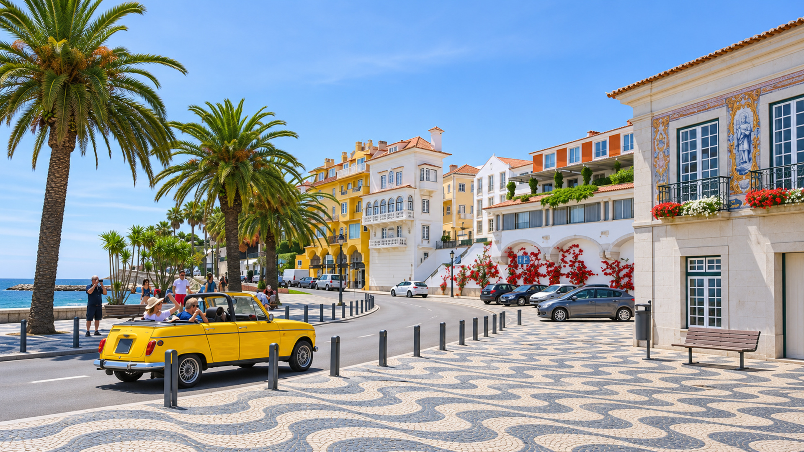
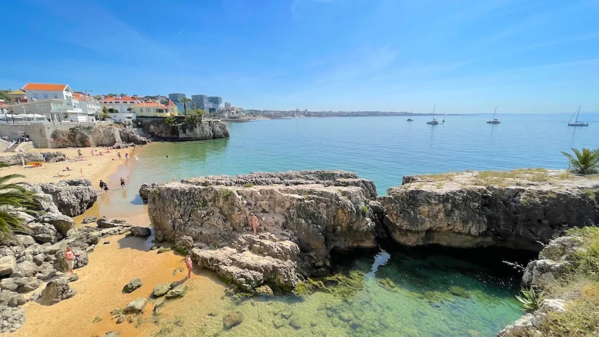

.png)


Acompanhamento na mudança para Portugal e articulação com parceiros para documentação e processos burocráticos.

Acompanhamos pessoas, famílias e investidores que desejam viver, investir ou começar uma nova etapa em Portugal. Um percurso pensado à sua medida, com especial atenção a Cascais e Lisboa.


É a partir dessa conversa que desenhamos o seu percurso, ligando pessoas, lugares e oportunidades que fazem sentido para si.
Da preparação da mudança à escolha de uma casa, dos primeiros passos em Portugal às ligações que ajudam a sentir-se parte da comunidade.


Acompanhamento na mudança para Portugal e articulação com parceiros para documentação e processos burocráticos.

Uma procura orientada pelo seu estilo de vida, pelas suas necessidades e pelo que espera de uma casa.
Acompanhamento na venda do seu imóvel, com atenção às suas características e aos seus objetivos.

Apoio na escolha de uma casa e de uma localização adequadas à etapa que está a viver.

Seleção e análise de oportunidades imobiliárias alinhadas com os seus objetivos.
Apoio personalizado para facilitar a chegada e o quotidiano em Portugal.

Ligações a profissionais, especialistas e à comunidade local, de acordo com o que precisa.
Sentir-se em casa também passa por quem encontra. Uma nova etapa ganha forma através das pessoas que passam a fazer parte dela.
Conheça Anne e Constança e a visão que dá origem à Coral: acompanhar cada pessoa com proximidade, conhecer o território em profundidade e criar ligações com significado.
Duas mulheres ligadas por uma visão partilhada: acompanhar cada pessoa com proximidade, conhecer o território em profundidade e criar ligações com significado entre quem chega e Portugal.
São territórios que conhecemos e estudamos rua a rua, desde a arquitetura e a luz de cada bairro ao ritmo de vida das escolas, comunidades e oportunidades fora do circuito óbvio.
Tudo começa numa conversa tranquila. Primeiro, conhecemos quem chega, a sua forma de viver e as suas prioridades. Só depois desenhamos o percurso certo.
É uma seleção viva de casas e oportunidades escolhidas a dedo ao longo do ano, avaliadas pela arquitetura, localização, história e pela forma de viver que proporcionam.
Sim. Partilhamos uma rede cuidadosamente selecionada de parceiros, profissionais e contactos locais para agilizar documentação, processos burocráticos e integração na comunidade.